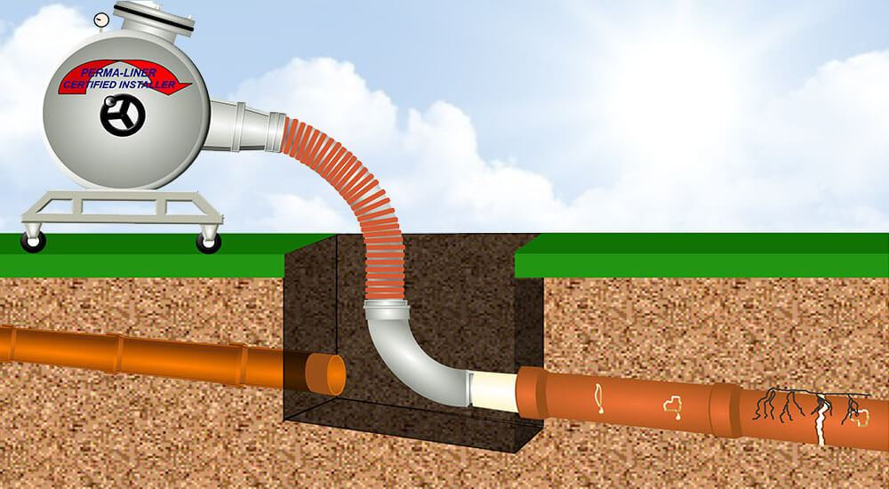

Our specialized sewer pipe lining method allows us to fix pipe lines so they will work for years without the need of destroying any road or yard. Instead of removing your old pipes this method uses Cured-in-Place-Piplining otherwise known as CIPP to restore the inner walls of your pips. This will allow your pipes to work without fail for a long time and with minimal damage to the surrounding.
